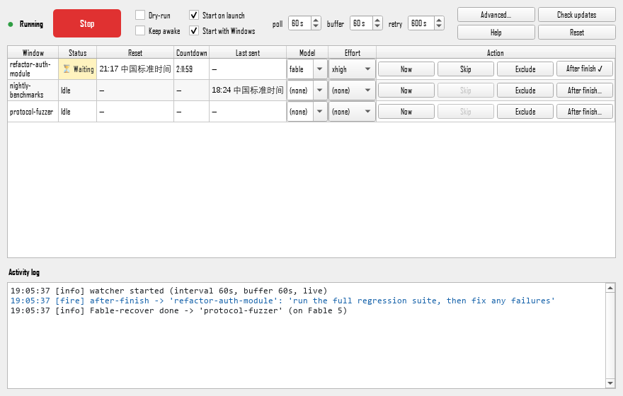

|
🎉 v1.0.1 首发 · 免费开源
Claude Code 跑长任务
|
Anthropic 给 Claude 订阅用户的 5 小时窗口配额，是当下用 Claude Code 跑长任务最大的天花板。订阅期间用满后必须等下一个窗口才能续。这个工具帮你做的事很简单：检测到限制 → 等到 reset 时刻 → 自动帮你输入 continue 让任务接着跑。下面从头介绍，已经看过早期版本的朋友直接跳到"v1.0.1 有什么新的"。
跑 Claude Code 长任务的朋友，下面这些场景应该都经历过：
You've hit your limit · resets 11pm，傻坐了一晚上。Retrying in 0s · attempt 10/10 卡死，得手动 continue 才能恢复。这是一个免费开源的小工具，把"看到 limit → 等到 reset → 手动输入 continue"这套机械动作自动化，双击 EXE 就能用，不需要装 Python，不需要配环境。
Auto-Continue 是一款专为 Claude Code 重度用户设计的 Windows 守护程序。它通过 Win32 UI Automation 实时读取所有 Windows Terminal 窗口的输出，识别 Claude 的限制提示和网络重试提示，到点之后自动把 continue 输入到对应终端，让你的长任务跨越 5h 窗口、跨越网络抖动继续往下跑。

|
⏰
5 小时窗口限制
检测到 "You've hit your limit · resets 11pm (Asia/Shanghai)" 之类的提示，解析出 reset 时刻，到点 + 20 秒缓冲后自动输入 continue。
|
🌐
网络重试耗尽
家里 WiFi / 公司代理偶尔抽风，Claude 卡在 "Retrying in 0s · attempt 10/10"。守护程序每 30 秒自动 resend continue，网络一恢复任务就接着跑。
|
|
🪟
多窗口并行监控
同时开 5 个 Windows Terminal 跑不同任务？一个 GUI 全部看到。每个窗口独立倒计时、独立冷却（避免重复触发）。
|
🌓
深浅主题跟随系统
Windows 亮色模式下浅色高亮，切到深色模式自动换深色面板和高对比文字，切换主题瞬间生效、连旧日志行也会按新配色重画。
|
|
🎯
精准识别多种限制措辞
覆盖
limit / session limit / weekly limit / usage limit 四种措辞，弯/直引号都识别。 |
🌏
全时区支持
不论你在 Asia/Shanghai、America/Los_Angeles、Europe/London、Asia/Tokyo 还是 UTC，pytz 自动计算下一次 reset 的本地时刻。
|
|
⚡
/effort 自动前置
每个窗口可独立配置
max / xhigh / high / medium / low，续命前自动 /effort <level> + 确认弹窗，再输入 continue。 |
🛡️
15 分钟冷却防重发
发送后 15 分钟内不会被同一条残留的 limit 消息再次触发，新的 limit 消息（不同 reset 时间）则会自动覆盖旧的 pending。
|
|
💤
Keep Awake 防睡眠
勾选后调用
SetThreadExecutionState，Windows 11 的 Modern Standby 不再凌晨杀进程，无人值守通宵跑任务也能续上。 |
📥
系统托盘最小化
最小化按钮缩到右下角托盘，X 按钮才退出。右键托盘菜单显示窗口 / 退出，干净不占任务栏。
|
|
🧪
Dry-Run 安全演练
勾上 Dry-Run，所有检测和倒计时都正常运行，但不会真的按键。第一次跑、或想确认不会误触发其它窗口时用。
|
🚫
每行可排除
不想监控的窗口（比如纯 PowerShell、纯 SSH），点 Exclude 一键排除，设置永久记住下次启动不再监控。
|
每一行就是一个 Windows Terminal 窗口，颜色和状态一目了然：
| 状态 | 颜色 | 含义 |
|---|---|---|
| Idle | 无 | 窗口正常，没有触发任何条件 |
| ⏳ Waiting | 浅黄 | 已检测到 limit，正在倒计时等 reset 时刻 |
| ▶ Sending | 浅橙 | 正在把目标终端拉到前台并发送按键 |
| ✓ Sent | 浅绿 | 续命已发送（5 秒后转入冷却态） |
| Cooldown | 浅灰 | 发送后 15 分钟冷却，防止残留 limit 消息重复触发 |
| ⚠ Net retry | 浅红 | 检测到 attempt 10/10，正在每 30 秒发送 continue 直到网络恢复 |
| Excluded | 极浅灰 | 手动排除的窗口，不再监控 |
|
❌ 没有工具
|
✅ 有了这个工具
|
只要你符合下面任何一条，这个工具都能帮到你：
| 项目 | 说明 |
|---|---|
| 当前版本 | v1.0.1（2026-06 发布） |
| 目标场景 | Claude Code（CLI 版）跑在 Windows Terminal 上 |
| 操作系统 | Windows 10 / 11（用了 Win32 UIA + SendInput） |
| 前置要求 | Windows Terminal（wt.exe），不支持老的 ConHost 控制台 |
| 运行依赖 | 无（单文件 EXE，自带 Python 运行时） |
| EXE 大小 | 55 MB |
| 轮询周期 | 默认 30 秒（5–600 秒可调） |
| Reset 缓冲 | 默认 20 秒（0–600 秒可调） |
| 网络重试间隔 | 默认 30 秒（5–600 秒可调） |
| 支持时区 | 任意 IANA 时区（pytz），常见缩写（EDT、PST 等）也识别 |
| 设置持久化 | QSettings（Windows 注册表 HKCU\Software\auto_continue\gui） |
| 开源协议 | MIT |
| 费用 | 完全免费 |
工具只读所有 Windows Terminal 窗口的可见文本（通过 Win32 UIA），不会读 Claude 的网络流量、不会读凭据、不会上传任何数据。源码完全公开在 GitHub，可自行审计或自己编译：
🎁 免费下载 · 立即体验单文件 EXE，双击即用
下载文件： |